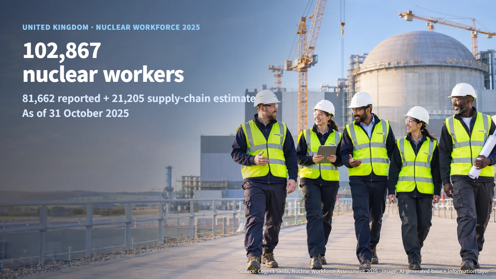
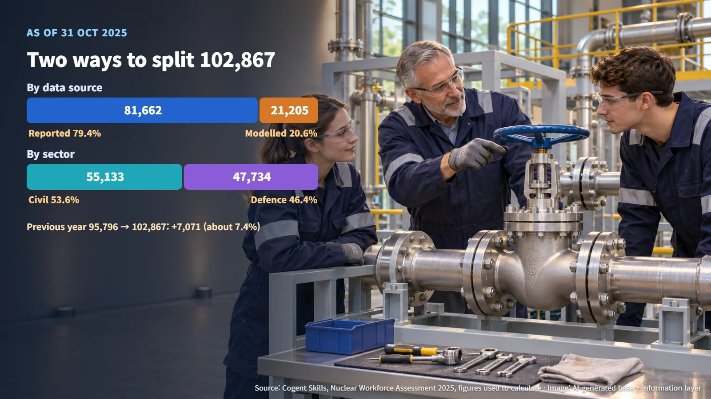
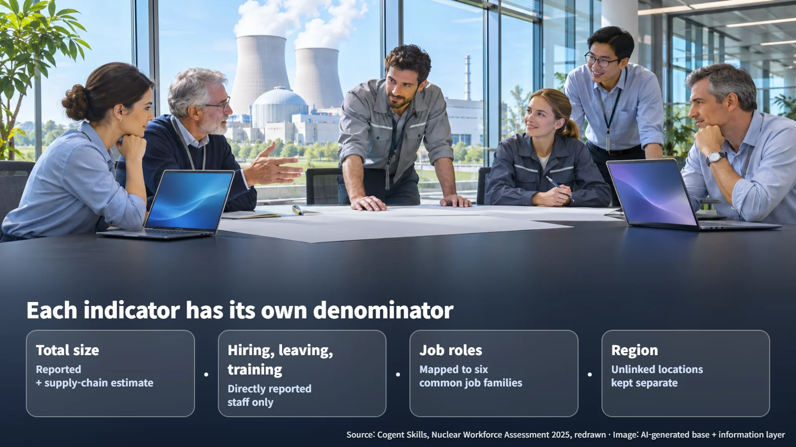

United Kingdom · Workforce · Statistics
How the UK Counts 102,867 Nuclear Workers: Reported Data, Supply-Chain Estimates and What Each Figure Measures
The UK nuclear workforce totalled 102,867 people at 31 October 2025, combining 81,662 directly reported workers with a modelled supply-chain estimate. Each indicator in the assessment uses its own population.
"UK nuclear workforce rises by over 7%." That was the headline NucNet carried on 13 November. As more countries plan new reactors, a common question follows: will there be enough people to build and run them? A growing headcount looks like an encouraging answer.
With workforce statistics, though, the method behind a number often tells you more than the number itself. Who supplied the data, what was counted, and which parts were filled in by a model all determine where a figure can be used. This post walks through the Nuclear Workforce Assessment 2025 (NWA) published by Cogent Skills in the UK.

How the 102,867 figure is built
The NWA covers workforce data as of 31 October 2025 and was published in November 2026, so there is roughly a one-year gap between the reference date and the release. Table 1 of the report gives a total of 102,867 people, made up of 55,133 in the civil sector (power generation, decommissioning and other civil nuclear activity) and 47,734 in defence.
Working through the shares: civil is 55,133 ÷ 102,867 ≈ 53.6%, and defence is 47,734 ÷ 102,867 ≈ 46.4%. Close to half of the UK nuclear workforce works in defence, which is the first thing to keep in view when reading the total. For civil reactor programmes, the 55,133 civil figure is the natural starting point.
Next comes the origin of the numbers. Of the 102,867, 81,662 were reported directly by participating organisations. The remainder is supply-chain workforce estimated with a model based on the composition of supply-chain spending. The arithmetic is:
- Estimated component: 102,867 − 81,662 = 21,205 people (about 20.6% of the total)
- Directly reported share: 81,662 ÷ 102,867 ≈ 79.4%
Roughly four-fifths of the total comes from employers' own HR data, and about one-fifth is a spending-based estimate of the wider supply chain. The 21,205 figure is calculated as the difference between two published numbers; headcounts for individual supply-chain companies have not been published. The same model was used for the 2023 to 2025 assessments, and its detailed coefficients and formulas have not been published. The report lists updating the spending composition as an area for improvement.

The directly reported data also goes through processing. The NWA accepts each organisation's own HR data format, then maps job titles onto a common framework of six job families (engineering, business support, trades, operations, project and programme management, and science, technical, health, safety and environment), checks the mapping with participants, and combines the results. It is a bit like transcribing ledgers kept in different languages onto one shared template. Where sensitive information is restricted at the detailed job level, it can still be included in the broader job family.
Each indicator has its own denominator
If the headline total combines reported and estimated workers, what do the detailed indicators such as age, gender, recruitment, training and leavers rest on? They cover directly reported workers only. To read a recruitment rate correctly, look within the directly reported population (81,662) and check the denominator and period used in that specific table.
A rate is a fraction, and a fraction changes meaning when its denominator changes. Here is the population behind each type of indicator:
| Indicator | Coverage | What to check | |---|---|---| | Total workforce | Directly reported + supply-chain estimate | Use to describe overall sector size | | Recruitment, turnover, training | Directly reported workers | The table's denominator and period | | Job classification | Mapped to six common job families | Correspondence with each organisation's original roles | | Region | Located records alongside unlinked records | Notes on unlinked and sensitive data |
(Source: Cogent Skills, Nuclear Workforce Assessment 2025, adapted)
The regional table includes a separate "No Linked Location" category. It holds modelled data, staff without a fixed workplace, and sensitive records. When assessing regional training needs, keeping this group as its own line, instead of spreading it across regions, fits the nature of the data.

Reading the 7,071 added in one year
The previous year's table showed a total of 95,796. The increase is 102,867 − 95,796 = 7,071 people, and the growth rate is 7,071 ÷ 95,796 ≈ 7.4%, consistent with NucNet's "over 7%".
Two kinds of change sit inside that increase. One is real workforce movement: people joining, leaving and moving. The other is a change in how the statistics are produced: wider survey coverage, improved regional allocation and refined job classification. The report explains that expanded coverage affected part of past growth. Before deciding whether something got heavier, you first confirm it was weighed on the same scale.
The composition calculated above adds another layer. Because about 20.6% of the total is a model estimate, an update to the model's spending inputs can move the total independently of actual headcount. When comparing with the next edition, recording the reference date, population, denominator and data version for each table makes it possible to separate changes in workforce size from changes in method.
The report's planned improvements point in the same direction: counting separately those who leave one organisation and those who leave the nuclear sector altogether, standardising reasons for leaving, and splitting external hires from moves within the industry. A move within the industry redeploys existing skills; an external hire adds new capacity. An engineer who transfers from plant A to plant B raises plant B's headcount while the sector's total pool of expertise stays the same. The report names training and retaining new entrants and transferring knowledge from experienced staff as continuing priorities.
From headcount to training plans
Workforce statistics earn their value in training and deployment planning. The UK's National Nuclear Strategic Plan for Skills sets out standardisation of roles and qualifications and adjustment of training supply capacity. It maps training providers, trainers, contracts and resources, and identifies gaps between regional training demand and supply. The plan's website lists career conversion, regional skills hubs, industry experts contributing to teaching, and qualification mobility as current projects.
To connect the statistics to that plan, the data needs to follow a chain: role shortage → training course → training places → deployment on site. If the figures show a shortage in the operations job family, a workable response identifies which courses train for that role, how many places they offer, and where graduates go to work. The cleaner the six-family classification and the regional data become, the tighter that chain can be.
The scope of nuclear work is also broad. In a written parliamentary answer on 3 December 2024, the UK Department for Education explained that alongside nuclear-specific occupational standards, related apprenticeships in areas such as project management and maintenance also contribute to building and operating nuclear power plants. The number of nuclear graduates and the full range of roles a plant needs cover different scopes, and training plans work best when they include that wider range.
The 102,867 figure shows the size of the UK nuclear sector. The 81,662 and 21,205 inside it, and the different denominators behind each indicator, show where that figure can be applied. When the next NWA is released, reading the total together with its reference date, any model update and changes to job classification will reveal much more about what the growth rate actually captures.